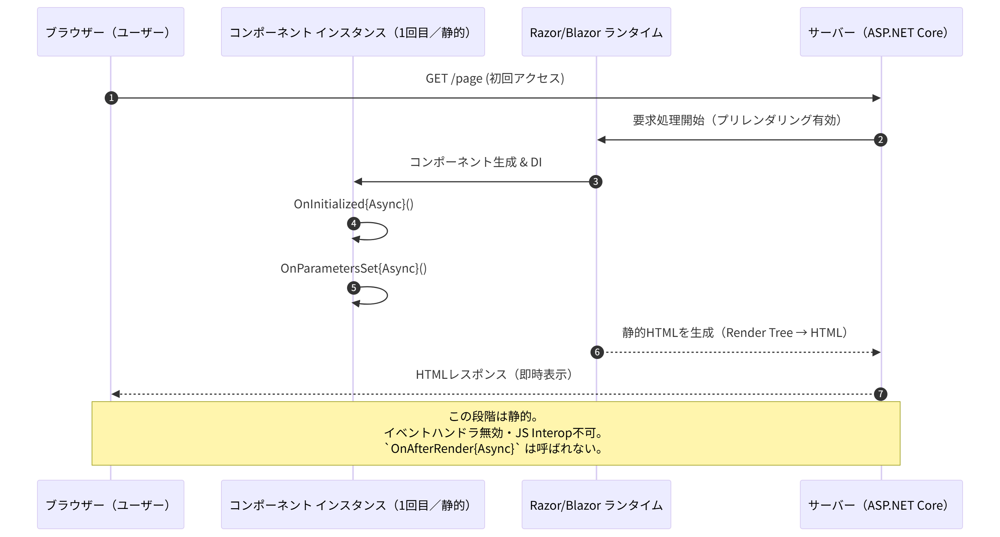
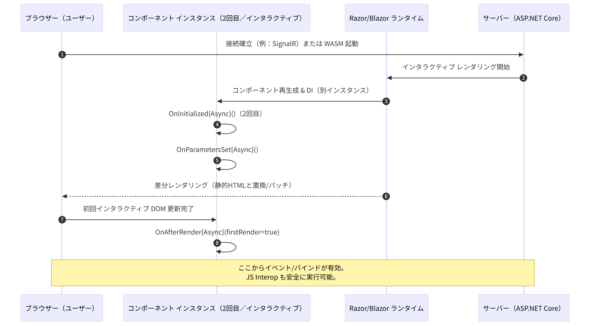

Blazorを用いてコンポーネントを書き始めると、「あれ？」と思う現象があります。それが、OnInitializedAsyncメソッドが2回実行されるという現象です。これのせいで、「データを2回も取得してる」「ログが二重に記録されてる」という事象が発生します。
これはバグではなく、Blazorの「プリレンダリング (Prerendering)」という機能による意図的な動作です。この記事では、なぜこの現象が起きるのか、そしてそれにどうスマートに対処すればよいのかを、Microsoftのドキュメントを基に解説します。
OnInitializedAsync は2回実行される挙動は、Blazorのプリレンダリング（Prerendering）という機能によって引き起こされます。つまり仕様です。PersistentComponentState （永続コンポーネント状態）サービスを利用します。Blazor (特にBlazor ServerやBlazor Web App) には、ユーザー体験を向上させるための「プリレンダリング」という仕組みがデフォルトで備わっています。
これは、ユーザーがページにアクセスした際、まずサーバー側でコンポーネントを実行し、その結果を静的なHTMLとして先にブラウザに送信する技術です。
OnInitializedAsyncが2回実行されるメカニズムこのプリレンダリングの仕組みこそが、OnInitializedAsyncが2回呼ばれる原因です。
OnInitializedAsyncが走ります。OnInitializedAsyncが走ります。OnAfterRender{Async} は呼ばれない（JS Interop 不可）OnInitializedAsync を実行します。ここでAPIからデータを取得するコードがあれば、それが実行されます。
OnInitialized{Async} が再度実行、この後に OnAfterRender{Async}(firstRender=true) が初めて呼ばれるOnInitializedAsync をもう一度実行します。
要するに:
- 1回目（サーバー）: 「見た目」のHTMLを素早く作るために実行。
- 2回目（クライアント）: 「動き」を追加して操作可能にするために実行。
この仕様を知らずにOnInitializedAsyncに重い処理を書くと、問題が発生します。
重い初期化や JS Interop は OnAfterRenderAsync(firstRender) へ書くと良いでしょう。プリレンダリング中は JS 呼び出しができないため、初回のインタラクティブ描画完了後に実行します。プリレンダリング中は OnAfterRender{Async} が呼ばれず、JS Interop も禁止。初回インタラクティブ化後のOnAfterRender{Async}(firstRender == true)にまとめるのが安全です。
PersistentComponentState で状態を引き継ぐでは、どうすればAPI呼び出しのような「1回だけ実行したい処理」を正しく扱えるのでしょうか？答えは、「1回目（サーバー）の実行結果を、2回目（クライアント）に引き継ぐ」ことです。
Blazorには、そのための仕組みとして PersistentComponentState （永続コンポーネント状態）サービスが用意されています。これは、プリレンダリング時（サーバー）に取得したデータを、HTML内にシリアライズして埋め込み、クライアント側での再実行時にそれを復元する仕組みです。
この現象を再現するコードを用意しました。
GenerateNumberBad.razor対策を行わず、値が2回生成されてしまう（画面上の数値が変わってしまう可能性がある）コードです。
@page "/generate-bad"
@* 対策なしの悪い例 *@
<h3>Generate Number (Bad Pattern)</h3>
<p>生成された数値: <strong>@randomNumber</strong></p>
<p>
このコンポーネントでは、プリレンダリング時と接続確立時の2回、
ランダム値の生成が実行されます。<br />
そのため、画面が一瞬ちらついて数値が変わる可能性があります。
</p>
@code {
private string? randomNumber;
protected override async Task OnInitializedAsync()
{
// 意図的に少し待機させて、挙動をわかりやすくします（非同期処理のシミュレーション）
await Task.Delay(500);
// 1回目と2回目で異なる値が生成される
randomNumber = Guid.NewGuid().ToString();
}
}実行してみると、表示される値がちらついて見えます。これは1回目に生成されたランダム値と、2回目に生成されたランダム値をそれぞれ両方とも表示しているためです。
GenerateNumberGood.razorPersistentComponentState を使用して、1回目に生成した値を2回目に引き継ぐ（再実行を防ぐ）コードです。
@page "/generate-good"
@implements IDisposable
@inject PersistentComponentState ApplicationState
@* 対策済みの良い例 *@
<h3>Generate Number (Good Pattern)</h3>
<p>生成された数値: <strong>@randomNumber</strong></p>
<p>
このコンポーネントでは、プリレンダリング時に生成した値を保存し、
2回目の実行時にはその値を再利用しています。<br />
そのため、数値は変わりません。
</p>
@code {
private string? randomNumber;
private PersistingComponentStateSubscription persistingSubscription;
protected override async Task OnInitializedAsync()
{
// ▼ ここが重要: 保存された状態があるか確認する
// "randomNumberKey" というキーで以前の値が保存されていれば、それを採用する
persistingSubscription = ApplicationState.RegisterOnPersisting(PersistData);
if (!ApplicationState.TryTakeFromJson<string>("randomNumberKey", out var restoredValue))
{
// 保存された値がない場合のみ（つまり1回目のプリレンダリング時）、生成処理を行う
await Task.Delay(500); // 重い処理のシミュレーション
randomNumber = Guid.NewGuid().ToString();
}
else
{
// 保存された値があった場合（2回目の実行時）、それをそのまま使う
randomNumber = restoredValue;
}
}
// プリレンダリング完了時に呼ばれるメソッド。現在の状態を保存する。
private Task PersistData()
{
ApplicationState.PersistAsJson("randomNumberKey", randomNumber);
return Task.CompletedTask;
}
// コンポーネント破棄時に購読を解除する
public void Dispose()
{
persistingSubscription.Dispose();
}
}上記のコードでは、表示のちらつきは見られません。これは、１回目に生成された値をそのまま表示しているためです。
理解すべきポイントは、「ライフサイクル自体は2回走っているが、重い処理や値の変更をスキップしている」という点です。
| 特徴 | Bad Pattern (対策なし) | Good Pattern (PersistentComponentState) |
|---|---|---|
| 1回目の実行 (サーバー側) | ランダム値 A を生成。 HTMLに「A」と書いてブラウザへ送る。 | ランダム値 A を生成。 HTMLに「A」と書き、さらに「隠しデータとしてA」を埋め込んでブラウザへ送る。 |
| ブラウザの表示 | ユーザーは「A」を見る。 | ユーザーは「A」を見る。 |
| 2回目の実行 (接続確立後) | ランダム値 B を生成。 画面を「B」に書き換える。 → ユーザーはAからBに変わるのを目撃する。 | 埋め込まれた「隠しデータ(A)」を探す。 見つかったので生成処理をスキップし、A を採用する。 → ユーザーには変化がないように見える。 |
OnInitializedAsync が 2 回実行されないケースがあります。OnParametersSet{Async} は親の再レンダリングや非プリミティブ型パラメータの変更検知仕様により、期待より多く呼ばれることがあります。必要なら自前で差分判定することになります。InteractiveAuto は初回は Server、2 回目以降は WASM を選ぶなど直感と異なる動きをする場合があります。既存のインタラクティブ コンポーネントがあるページでは 既存モードを優先することに注意しましょう。OnInitializedAsyncが2回呼ばれるのは、初期表示を高速化するプリレンダリング機能が原因。
PersistentComponentState を使うのがベストプラクティス。
PersistAsJson で登録し、2回目（クライアント）で TryTakeFromJson を使って復元する。OnInitializedAsync で JS Interop や重い I/O を直に実行（プリレンダリング中に失敗・二重取得）。PersistentComponentState で 1 回目の結果を 2 回目へ引き継ぐ。OnAfterRenderAsync(firstRender) に重い処理を集約。この仕組みを理解すれば、Blazorのライフサイクルをより深く使いこなし、パフォーマンスとユーザー体験に優れたWebアプリケーションを構築できるはずです。Blazorの他のライフサイクルメソッド（OnParametersSet や OnAfterRenderAsync など）についても、それぞれの役割を理解すると、さらに開発がスムーズになると思います。